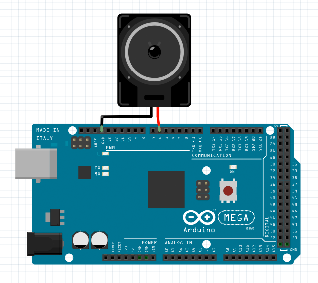

PLAY TONE:
PLAY MUSIC NOTE:

var player1 = new TonePlayer();
// set up a tone player wired with pin 6 on unit 1
player1.setup(1, 6);
player1.play(500); // generate a 500Hz tone
player1.play(1000); // generate a 1000Hz tone
player1.play(MusicNote.C3); // play a C3 note (a 131Hz tone)
player1.stop(); // stop playing tone
player1.play(700, 500); // generate a 700Hz tone for 500 milliseconds
// play a melody
setTimeout(function() { player1.play(MusicNote.G3, 220); }, 0);
setTimeout(function() { player1.play(MusicNote.E3, 220); }, 250);
setTimeout(function() { player1.play(MusicNote.E3, 440); }, 500);
setTimeout(function() { player1.play(MusicNote.F3, 220); }, 1000);
setTimeout(function() { player1.play(MusicNote.D3, 220); }, 1250);
setTimeout(function() { player1.play(MusicNote.D3, 440); }, 1500);
setTimeout(function() { player1.play(MusicNote.C3, 220); }, 2000);
setTimeout(function() { player1.play(MusicNote.D3, 220); }, 2250);
setTimeout(function() { player1.play(MusicNote.E3, 220); }, 2500);
setTimeout(function() { player1.play(MusicNote.F3, 220); }, 2750);
setTimeout(function() { player1.play(MusicNote.G3, 220); }, 3000);
setTimeout(function() { player1.play(MusicNote.G3, 220); }, 3250);
setTimeout(function() { player1.play(MusicNote.G3, 440); }, 3500);
The parameter of the play() function is a frequency value that can be set for generating a specific tone.
The allowed frequency value can range between 20 and 20000 hertz for the sound a human ear can hear.
TonePlayer
setup(unit, pin)
initialize a tone player object with a specified pin on a specified unit.
return value: true if successful, otherwise false.
play(frequency, duration)
set the frequency and duration value for generating a specific tone.
If the optional parameter duration is not set, the tone playing will never stop until function stop() called.
return value: true if successful, otherwise false.
stop()
stop playing tone.
return value: true if successful, otherwise false.
Return Value Note:
The function will return a value when your h5control program uses waitRsp mode, but no return value when uses nowaitRsp mode.
whenSetup(done)
receive the callback when setup done. parameter done is true if successful or false otherwise.
whenPlay(frequency)
receive the callback when the tone playing is beginning.
whenStop()
receive the callback when the tone playing is stopped.
MusicNote
B0 31Hz
C1 33Hz CS1 35Hz D1 37Hz DS1 39Hz E1 41Hz F1 44Hz
FS1 46Hz G1 49Hz GS1 52Hz A1 55Hz AS1 58Hz B1 62Hz
C2 65Hz CS2 69Hz D2 73Hz DS2 78Hz E2 82Hz F2 87Hz
FS2 93Hz G2 98Hz GS2 104Hz A2 110Hz AS2 117Hz B2 123Hz
C3 131Hz CS3 139Hz D3 147Hz DS3 156Hz E3 165Hz F3 175Hz
FS3 185Hz G3 196Hz GS3 208Hz A3 220Hz AS3 233Hz B3 247Hz
C4 262Hz CS4 277Hz D4 294Hz DS4 311Hz E4 330Hz F4 349Hz
FS4 370Hz G4 392Hz GS4 415Hz A4 440Hz AS4 466Hz B4 494Hz
C5 523Hz CS5 554Hz D5 587Hz DS5 622Hz E5 659Hz F5 698Hz
FS5 740Hz G5 784Hz GS5 831Hz A5 880Hz AS5 932Hz B5 988Hz
C6 1047Hz CS6 1109Hz D6 1175Hz DS6 1245Hz E6 1319Hz F6 1397Hz
FS6 1480Hz G6 1568Hz GS6 1661Hz A6 1760Hz AS6 1865Hz B6 1976Hz
C7 2093Hz CS7 2217Hz D7 2349Hz DS7 2489Hz E7 2637Hz F7 2794Hz
FS7 2960Hz G7 3136Hz GS7 3322Hz A7 3520Hz AS7 3729Hz B7 3951Hz
C8 4186Hz CS8 4435Hz D8 4699Hz DS8 4978Hz
enumerates frequencies of 88 musical notes.
there are C, C#, D, D#, E, F, F#, G, G#, A, A#, B twelve notes in each scale.
character S means "sharp", # the rising note.